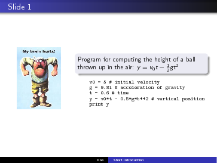
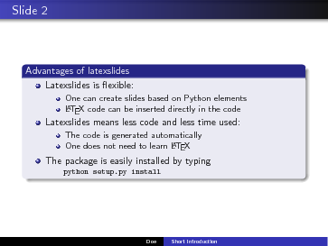

[1] Simula Research Laboratory
[2] University of Oslo
Latexslides is a tool that allows you to write slides in Python: each slide is a Python object, and a talk is a list of such objects. This list can converted to LaTeX beamer or prosper code. One can compose talks by importing slide objects from Python modules and hence reuse individual slides.
Latexslides simplifies many of the constructions in LaTeX beamer. For example, a figure can be placed to the right, left, under or over a bullet list by simply specifying its position as n, s, e, w (north, south, east, or west). Each slide object is composed of various Python objects reflecting basic building blocks in slides: text block, bullet block, figure, etc. Take a look at a sample talk, which explains the basics of Latexslides, and compare this PDF file with the Latexslides source in Python. A more manual-style documentation is also available as a web page or as a PDF file.
If the background doesn't interest you, and you just want to get started with Latexslides, jump to the 'Getting started' section.
For many people in the fields of natural sciences, LaTeX is the preferred typesetting tool. Therefore, it didn't take long before different packages where developed allowing people to also create slides with LaTeX. Out of many, Prosper and Beamer are probably the best known. The most popular package of these two is Prosper, while Beamer is the latest, the fanciest, and the most PowerPoint-like package for LaTeX slides. Unfortunately, there is a lot of LaTeX commands that you need to insert to make LaTeX slides. What if we could just write the basic slide contents and insert a minimum of tags? That is, it could be nice with a simpler syntax than what LaTeX slide packages require.
Another point is that it takes quite some boring work to update old presentations, written in Prosper or even older syntax, to a new package like Beamer. And what about the next super-package for LaTeX slides? It would be good if all your slides were written with a LaTeX-independent syntax such that the slides can easily be ported to a new (or old) format.
A third point is that sometimes we would like to automate the writing of slides, for example when creating animations where several slides with small differences are typically written by manual cut and paste operations. It would be better to have a program doing this.
From these points, it became natural to specify slides as program code and automate the generation of the specific syntax for different LaTeX packages. Our solution is Latexslides, which is written in Python and requires you to write your slides in Python. Typically, each slide is a Slide object, to which you assign a name, and then you can collect the names in lists to compose a particular presentation. It is easy to have your slides in modules such that new presentations can import slides from other presentations. This gives great flexibility in reusing slides from presentation to presentation without making a copy of the slides. The LaTeX knowledge required from the end-user is also less when using Latexslides than using plain LaTeX (then again, the Python knowledge needed is much larger). But some of the advanced arguments to Latexslides functions might still require a good LaTeX book.
Another important point is, of course, that whatever can be done in Python, should be done in Python :-) Also slides...
Initially, this software was a module and script written by Hans Petter Langtangen and later improved by Åsmund Ødegård, both at Simula Research Laboratory, Oslo, Norway. Generating talks by writing Python code that was more compact than the corresponding LaTeX code attracted interest. Arve Knudsen, also from Simula, started an effort to extend the initial software and perform a complete redesign. Then Ilmar Wilbers took Knudsen's ideas and completed the job of creating the new Latexslide package for slide generation in Python. (The old API is still supported for backward compatibility.)
If you want to get started with a more advanced example, it is recommended that you take a look at the file doc/exampletalk.py, which demonstrates many of the functionalities that are available. Going through the source code of this talk at the same time as reading the PDF generated from it, should get you started in less than half an hour.
You can generate a new, empty presentation by typing
python -c 'import latexslides; latexslides.generate("myfile.py")'
We will now look at a short example introducing the main functionalities of Latexslides. We look at the source code of two slides, and the result for Beamer can be viewed in the figures below. The first slide consists of two parts, the left part contains a figure, and the right part contains some text as well as a few lines of code, see Figures fig:intro1 and fig:intro2. The Python code used for generating these slides is as follows:
from latexslides import *
author_and_inst = [("John Doe", "Royal University of Nothing")]
slides = BeamerSlides(title="Short Introduction",
titlepage=False,
toc_heading=None,
author_and_inst=author_and_inst,)
slide1 = Slide("Slide 1",
content=[TextBlock(r"""
Program for computing the height of a ball thrown up in the air:
$y=v_0t- {1\over 2} gt^2$""") ,
Code(file='sample_code.py')],
figure='brainhurts.ps',
figure_pos='w',
figure_fraction_width=0.4,
left_column_width=0.3,
)
slide2 = BulletSlide("Slide 2",
["Latexslides is flexible:",
["One can create slides based on Python elements",
r"\LaTeX~code can be inserted directly in the code"],
"Latexslides means less code and less time used:",
["The code is generated automatically",
r"One does not need to learn \LaTeX"],
"The package is easily installed by typing" +
Code("python setup.py install"),],
block_heading="Advantages of latexslides",
)
collection = [slide1, slide2]
slides.add_slides(collection)
# Dump to file:
slides.write("intro.tex")
The next step is to define the objects that represent a slide. When we are finished with all slides, we have to collect them and add them to the main instance in the order we would like them to appear. Finally, we dump the whole presentation to file.
Our first slide is a general Slide object. The title is set to "Slide 1", and a figure is included on the slide. The figure is placed to the left of the slide, and set not to exceed more than 3/10 of the slide. It also had to be shrunk to 4/10 of its original size to fit on the slide. The right side of the slide consists of two elements, a TextBlock and some code. It is worth noticing that the Python code displayed on this slide is not part of the code defining the slide. Rather, we give the Code class an argument file=code.py, resulting in the Python code being read from the file code.py. Figure fig:intro1 displays the first slide.
 First slide of introductory example.
The second slide is a BulletSlide, which is less general than the super class Slide. This means that we have a less complicated interface at the cost of flexibility. The bullets are lists of string elements, but nested lists are allowed, as is shown. Finally, we opted to add a heading to the block making up the bullets. If omitted, no heading is displayed. Figure fig:intro2 displays the second slide.
 Second slide of introductory example.
Objects in Latexslides makes heavily use of keyword arguments. This means that when creating a new object, there are very few, if any, arguments that are mandatory. A lot of arguments are optional, and will be ignored if not present, or suitable default values will be used.
After an
the first instance we need to create is an instance of a subclass of the class Slides. This can be (at this time) either ProsperSlides, BeamerSlides or HTMLSlides. The default values and the Python data types for each keyword argument will be given below as 'Default' and 'Type'. If a keyword argument not works for all packages (subclasses), the name of the packages for which it works for will be given as well under 'Package'. Finally, necessary comments will be given under 'Comments'. It is worth noting the use of the keyword arguments n, s, e, and w. These correspond to north, south, east, and west, respectively. North indicates the top of a page, east the left of a page etc.from latexslides import *
Here is a list of keyword arguments for the constructor of a Slide instance:
After having created the BeamerSlides or ProsperSlides object, we are ready to start creating individual slides. There are six types of slides:
TextSlide has the following keyword arguments:
A general slide can consist of several objects, and we will look at them now:
Text takes only one argument, and that is the text.
BulletList has bullets as argument and dim as keyword argument:
Sometimes unblocking blocks is desired for achieving a simpler layout. If you want to turn off the block format for some selected slides only, you have to explicitly change the slide object from, e.g., TextBlock to Text and comment out the heading argument if that is present.Block.unblock = True
Once we have all the objects we want a slide to consist of, we can create the slide instance itself. All arguments are keyword arguments:
One can insert special slides to mark sections in the talk. The section slides will automatically appear in a table of contents and optionally in the header in Beamer (but not in Prosper). Sections are added in the same way as normal slides, except they are of type Section. If no section is defined, normal slides are simply added to a list of slides. If a section is defined, all slides added after that object will be part of this section, until a new section is defined. It has two keyword arguments:
Class SubSection is added in the same way as Section. If a subsection is added before a section is added, an error is issued and the generation of slides terminated. If a subsection is defined, all slides added after that object will be part of this subsection, until a new section or subsection is defined. It has two keyword arguments:
Instead of creating a slide and adding it immediately to the initial Slides object using the the function add_slide in Slides, it might be better to generate all the slide objects, and then add all the slides at the end of the file. This way, it is easier to change the order of the slides. This is done in both the introductory example and the exampletalk.py script. One can either use a `for`-loop and call the function add_slide for each element in the list, or call the function add_slides which takes the whole list as argument. If the presentation exists of the objects slide1, section1, slide2, subsection1, slide3, one can add all those to a list at the end of the presentation. If slides is the initial Slide object, and collection is a list of slides, one can use any of the two following ways of adding the slides in the list to the slides object:
for slide in collection:
slides.add_slide(slide)
The list of slide objects can be generated automatically, more about this in the next section.slides.add_slides(collection)
The slide object that one creates need to be stored in a Python variable, and instead of naming these object slide1, slide2 etc. it would be preferable to name them according to the slide title. When writing many slides, it would be easier to just create the slide objects without naming them, and to run a script to automatically name these objects when finished. The executable create_slidenames, which is part of Latexslides, does exactly that. Running
means the script searches the given file for lines starting with = Slide, = Section, or = SubSection, and adds a line consisting of the title of the slide before these lines. Special characters as well as spaces and Norwegian characters are substituted so the variable name is valid in Python. Spaces and the character '=' are substituted by underscores. For example,create_slidenames exampletalk.py
= Section('More about {if "__name__" == __main__}',)
More_about_if___name________main__ \
= Section('More about {if "__name__" == __main__}',)
would result in exampletalk.py now containing the variable names as well, whereas exampletalk.py.old~~ would contain the original file.create_slidenames exampletalk.py
Once you are finished writing the talk you need to add all the slide objects to the main instance of the Slides class used (e.g. BeamerSlides). The easiest way of keeping an overview is to do this at the end of the Python file, rather then after creating each slide, as discussed in the previous section. We included a script for extracting the variable names of all slides in the file in the script extract_slidenames. It runs through the file scanning for the variable names, and prints out a Python list in the terminal that can be copied directly in the the bottom of the Python file. So when running
the file exampletalk.py remains the same. Instead of copying the test we could add the list to the bottom of the file automatically:extract_slidenames exampletalk.py
Note that if we add or remove slides, we need to regenerate this list.extract_slidenames exampletalk.py >> exampletalk.py
Another script that comes as part of Latexslides is pdf2odp. It is used for converting PDF files in general to a format recognized by OpenOffice. This script is described in more detail in the section 'Using talks in OpenOffice' further down.
When finished writing the presentation, we can dump the LaTeX code to file. This is done by simply calling the function write for the initial Slides object (of class BeamerSlides, ProsperSlides etc.). The argument is the file name. The write function also outputs the necessary commands one needs to run for creating the slides for the specific package used (Prosper, Beamer, HTML). So if all slide instances are collected in a list collection, these are dumped to file by writing
for c in collection:
slides.add_slide(c)
filename = 'mytalk.tex'
slides.write(filename)
If there are some slides that you do not want to be part of the presentation, you do not have to delete them. You can either remove the slides you do not want to include from the list, or even simpler, mark them as hidden. This can be done in three ways.slides.add_slides(collection) filename = 'mytalk.tex' slides.write(filename)
slides.add_slide(titleslide)
slides.add_slide(titleslide.hide)
If the function slides.write() is used, the necessary commands for compiling the talk are output to screen. If not, one simply uses latex mytalk.tex. Please note that the generation of HTML slides requires running tex4ht and t4ht afterwards.
Because Prosper cannot be used with pdflatex, latex is recommended. This means, however, that only .ps images can be used, not .png, if portability between Prosper and Beamer is desirable. It is recommended that you use the ImageMagick convert tool for converting the PNG image to PostScript, and including them as .ps or .eps files.
Latexslides includes a script for converting presentations in the PDF format to the OpenOffice Impress format (.odp). OpenOffice Impress is a presentation tool similar to Microsoft Office PowerPoint. OpenOffice is a free, open source alternative to Microsoft Office. One could convert the .odp file further to a PowerPoint file (.ppt), either by opening it in Impress and opting to save it as a .ppt file, or through a commandline script like PyODConverter (P Sometimes when giving a presentation, you might experience that the organizers only accept .ppt or .odp files. pdf2odp, which comes as part of Latexslides, solves this problem. Of course, not accepting PDF files these days would be surprising, and hence this is not the main objective of the script. The reason it was written is that sometimes, one might want to add a few extras to the presentation. For instance, one could highlight certain words by adding a circle, drawing some arrows, or one could use some of the advanced possibilities provided by presentation tools like Impress and PowerPoint without having to write the whole presentation with this tool, something that we already agreed upon can be rather tedious. In this way, we can combine the best from two worlds; the simplicity of Latexslides and the advanced interactive functionality of Impress or PowerPoint.
The script pdf2odp uses a Python module called odfpy. An error is given before exiting the script in case this module is unavailable. If the module is found, Ghostscript is used for converting the input file, which should be a PDF file, to a set of PNG files, one for each page in the input file. This conversion process can take some time. If Ghostscript is unavailable, the script will exit with an error. When the conversion is finished, odfpy is used to create the OpenOffice file. Each slide in the new presentation contains an image that corresponds to the slide in the input file, and this image covers the whole slide. Finally, the OpenOffice file is saved and the scripts exits.
As the slides from the original PDF file merely are images in the new .odp file, we loose some of the functionality from the PDF file, mainly the linking within the document. With Beamer, for instance, there are links in the presentation allowing one to navigate within the slides. These links will now simply be part of the image, and cannot be clicked. Also, as all the text is part of an image, it is no longer possible to copy the text or index the file in any way.
Some of the keyword arguments are only available to BeamerSlides and HTMLSlides. If these keyword arguments are present when using ProsperSlides, they are simply ignored.
HTMLSlides is really the same as BeamerSlides, with the following modifications:
Several LaTeX styles are included with this package. These are:
Note the first '.'; it ensures that the system-wide directories are searched first. More information on how to install the style files to the correct directories is found in the README file.export TEXINPUTS=:.:/absolute/path/to/styles
The following Emacs command (Alt + up-arrow) starts a slide object without a variable name:
(global-set-key [ (meta up)] " = Slide('',
content=[BulletBlock(bullets=[
'',")
In order for these to work, the commands need to be included in the file .emacs in your home directory. Sorry, no vim bindings!(global-set-key [ (meta down)] " ]), # end bullets and BulletBlock ], # end contents )")
The source code from the old version of this package can still be used. However it needs a few modifications. We start by importing the module:
If you used the from module import things style, you might want to tryimport latexslides.old as LaTeXSlides
The only difference is that the header, titlepage, and footer objects are to be omitted, meaning they should not be part of the list that is created at the end of the talk. Finally, the header_footer argument that was used for each bullet-slide in the old package is now a global variable set in the initialization of the main slides class, and is the same for all slides.from latexslides.old import *
Please contact the authors, ilmarw@simula.no or hpl@simula.no, for bug reports, feature requests and general help.